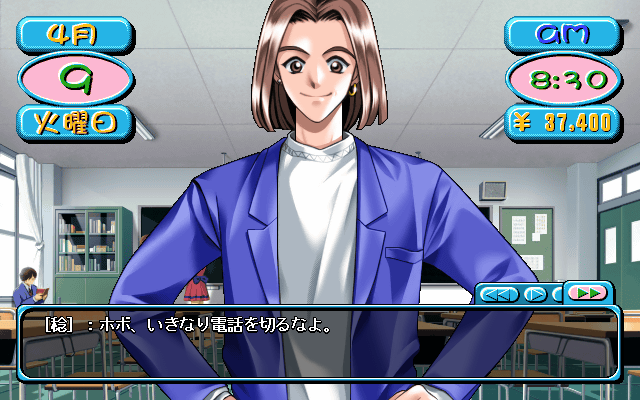
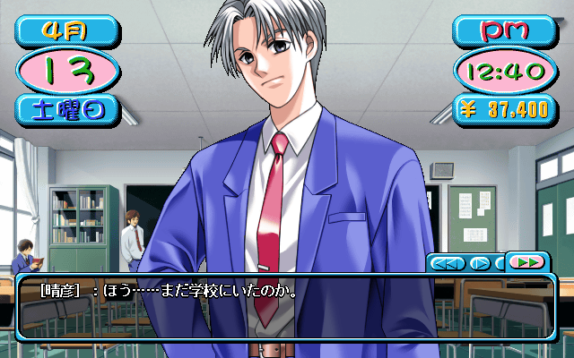
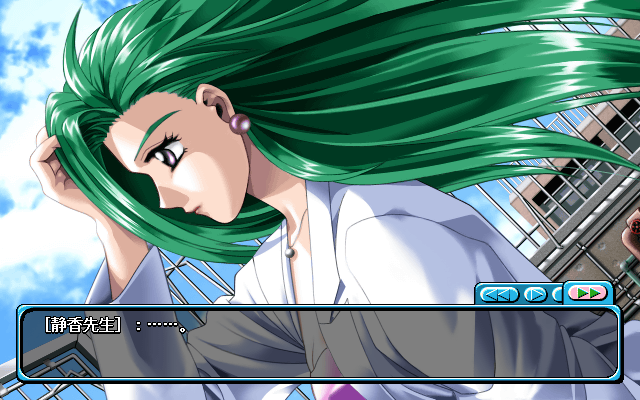
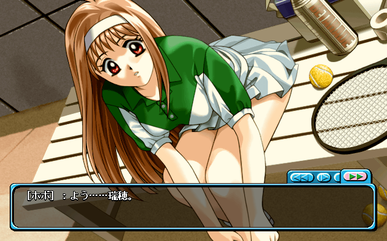
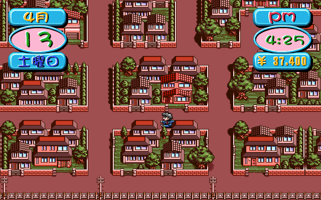
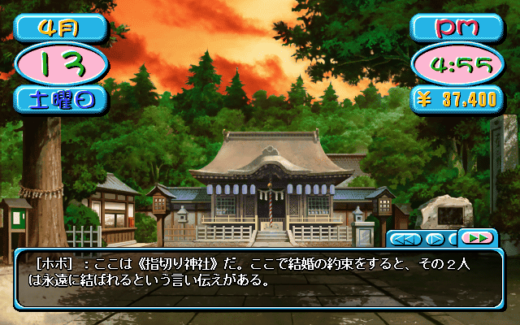
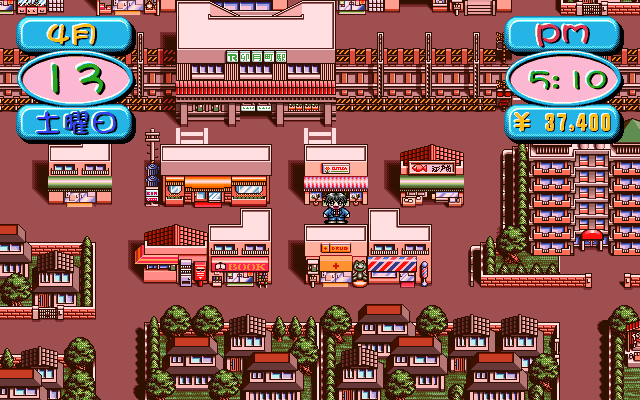
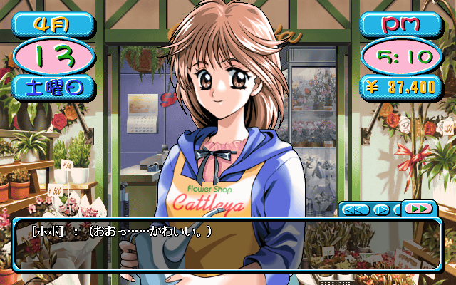
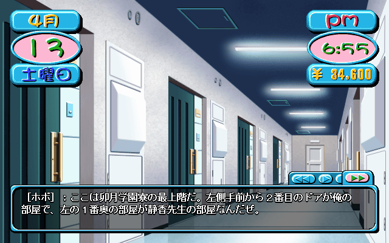

introducing..
Tuesday: | Minoru: | "hobo, why'd you hang up on me all of a sudden?" |
| hobo: | "I don't know why you even called me you didn't have anything to say." |
| Minoru: | "So.. We have plenty of cute girls in this class.." |
| hobo: | "So quick to change the subject." |
| Minoru: | "..There's Mizuho, and Reiko too." |
| hobo: | "I don't care about Mizuho, and I'm really not glad Reiko's here." |
| Minoru: | "C'mon, at least be happy that Mizuho's here. Didn't you have a crush on her when you were a freshman." |
| Mizuho: | "Good morning." |
| hobo: | "G-good morning." |
| Mizuho: | "I'm glad we're in the same class again. I was sad we were apart last year." |
| CHOICE: |
◯ Say "I'm happy too." ● Reply in an uninterested manner. ◯ Give an embarrassed grin without saying anything. |
| hobo: | "So?" |
| Mizuho: | "So? Is that all you're going to say?" |
| hobo: | "Yup, that's it." |
| Mizuho: | "Ahaha, you never change. That reminds me of the old days." |
| Reiko: | "......" |
| hobo: | (Tch, Reiko.) |
| Reiko: | "We're in the same class yet again. I feel like I'm at a funeral." |
| hobo: | "Just because you think it doesn't mean you have to say it out loud." |
| Shinji: | "H-hi." |
| hobo: | "Hmmm, why are you here Shinji?" |
| Shinji: | "I'm.. in class C.. so.." |
| hobo: | "Ah, is that so." |
| Shinji: | "I'm glad we're in the same class. We can be buddies!" |
| hobo: | "Buddies?" |
| Shinji: | "Sorry, friends." |
| hobo: | "I guess I'm fine with being friends." |
| Shinji: | "I see Minoru is in this class too." |
| hobo: | "Yeah, we've been in the same class all 3 years." |
| Shinji: | "Minoru's good." |
| hobo: | "What do you mean?" |
| Shinji: | "You're both such good friends, I'm jealous." |
| hobo: | (Hey, is he gay?) |
| Shinji: | "I hope we can become really close friends this year." |
| Miko: | "Hello." |
| hobo: | "Miko, you're in class B aren't you?" |
| Miko: | "......" |
| hobo: | "Ummm, did you hear me?" |
| Miko: | "Huh?" |
| hobo: | "I said, Miko-chan, you're in class B aren't you?" |
| Miko: | "Yes.. I'm not in Mizuho's class. I have the worst luck." |
| hobo: | (That's right, Miko and Mizuho are really good friends.) |
| Miko: | "Although I can always just come here and talk to her." |
| hobo: | "Haha, and you can talk to me too." |
| Miko: | "What would you have to say to me?" |

| Mayumi: | "Hello!" |
| hobo: | "Huh?" |
| Mayumi: | "I'm Tachibana Mayumi. Good morning!" |
| hobo: | "Y-yeah, good morning." |
| Mayumi: | "Finally we're in the same class." |
| hobo: | (Hm, she's acting awfully familiar.) |
| Mayumi: | "I've been paying attention to you since we were freshmen." |
| hobo: | "Uh, yeah.." |
| Mayumi: | "You can call me Mayumi, ok?" |
What you call someone in Japanese is a big mess. Calling someone their first name directly is usually only something you do to someone you're close to. The protagonist does it to pretty much everyone he meets though.
| hobo: | (She's completely ignoring me.) |
| Mayumi: | "Hey, you're good at fighting right? When you were a freshman I saw you fighting seniors." |
| hobo: | "I don't remember any of that." |
| Mayumi: | "I'm really attracted to strong guys." |
| hobo: | "Then you should date a gorilla." |
| Mayumi: | "Haha.. See you later, it was fun talking to you." |
| hobo: | (What a strange woman.) |
I finally get control of my character. Because it's a Saturday, I have until 8pm to do whatever I want. Any time I walk through a door it takes anywhere from 5 to 15 minutes, and of course whatever event occurs takes it's own time as well. You burn through this time incredibly quickly. And yes, that's right, school on a Saturday. At least it's a half-day.

I went back into the classroom and 10 minutes have gone by already.
| Haruhiko: | "Oh.. You're still in school huh." |
| hobo: | "Tch.. It's Haruhiko." |
| Haruhiko: | "I'm telling you now, quit hitting on girls at school. You've run wild for too long and I've lost my patience with you." |
| hobo: | "Are you telling me you act any differently?" |
| Haruhiko: | "What I do with girls is simply communication. Your acts are based on nothing but sexual desire." |
| hobo: | "......" |
| hobo: | (That idiot. No matter how nicely you dress it up, hitting on girls is still hitting on girls.) |
| *bang* | |
| hobo: | "Uwaahh!" |
| Reiko: | "Hey, look where you're walking." |
| hobo: | "Did you push me on purpose?" |
| Reiko: | "Hmmm.. Why would you think I'd do that?" |
| hobo: | "Answer me, and it's because you have a bad attitude." |
| Reiko: | "I don't want to talk to you. You're Uzuki High's problem child." |
| hobo: | "You're a problem child in a different way." |
| Reiko: | "......" |
| Reiko: | "What you said is inexcusable. Why do you think I'm a problem child?" |
| CHOICE: |
◯ Say "Because your boobs are so big." ● Say "We're in the same grade but you act so high-and-mighty." ◯ Say "Because you're the Shindou family's little princess." |
| hobo: | "We're in the same grade but you act so high-and-mighty. You're so domineering, it's why you don't have a single friend." |
| Reiko: | "......" |
| Reiko: | "You're all just commoners. I'm treating you all the way you should be treated." |
| hobo: | (I've seen plenty of girls act like they're almighty, but Reiko is over the top. Just talking to her has put me in a bad mood.) |
The school has 5 floors and a roof. My classroom is on the 5th floor. Getting out from the top takes at least 30 minutes.

| hobo: | (Ah, Shizuka Sensei.) |
| Shizuka: | "......" |
| hobo: | "Hey, what are you doing on the roof?" |
| Shizuka: | "It feels good doesn't it? Looking out at the scenery with the wind blowing against me." |
| hobo: | "Yeah." |
| Shizuka: | "When I was your age I remember going up on the roof like this all the time." |
| hobo: | "Ehh.. You went here too?" |
| Shizuka: | "I have tons of memories from those times." |
| hobo: | (That listless expression as she looks off into the distance, the spring breeze blowing through her long hair.. It's kinda sexy.) |
| Shizuka: | "Hey.." |
| hobo: | "Huh?" |
| Shizuka: | "For you, between a lover or friends, which one do you prefer." |
| hobo: | "What do you mean?" |
| Shizuka: | "For example, let's say you have a promise to go on a date." |
| hobo: | "Alright, I have a date planned with my girlfriend.." |
| Shizuka: | "When the time for the date comes, all of a sudden a friend asks you to help them. The reason doesn't matter." |
| hobo: | "Is it a male friend?" |
| Shizuka: | "Yeah, in my case it'd be a girl, in yours a boy." |
| hobo: | ("In my case", she says.. She's talking about her past.) |
| Shizuka: | "Keeping a promise with your lover or helping your friends when they need you, which would you choose?" |
| hobo: | "Umm.." |
| CHOICE: |
◯ Prefer a lover's promise. ● Of course, I'd help my friends first. ◯ Say "You can never tell what's going to happen so I don't know." |
| hobo: | "I'd help my friends first." |
| Shizuka: | "That's good. Sadly, I picked the opposite choice." |
I spot Mizuho out by the tennis courts.

| hobo: | "Yo, Mizuho. You practicing?" |
| Mizuho: | "No. I was helping coaching underclassmen, but right now I'm taking a little break." |
| hobo: | (It's been a long time since I've seen Mizuho in her tennis uniform up close. That idiot Haruhiko is always here forcing me to watch through the chain link fence.) |
| Mizuho: | "Because I can't compete this year I feel like I'm becoming more of a coach than a player." |
| hobo: | "That's right.. Seniors can't compete." |
| Mizuho: | "Yeah, Uzuki High is a college-prep school after all." |
| CHOICE: |
● Say "Why don't you join the sumo club?" ◯ Say "It'd be alright if you quit tennis altogether." ◯ Say "Once you get into college you can always start playing again." |
| hobo: | "Hehe, why don't you join the sumo club." |
| Mizuho: | "Do you think I'm getting fat?" |
| hobo: | "Hahaha.. Just kidding." |
| Mizuho: | "You shouldn't say those kinds of things to a girl." |
| hobo: | "Sorry." |
| Mizuho: | "I'm going to go back to practice now." |
| hobo: | (Uwahh, Mizuho's thighs were dazzling.) |
| hobo: | "......" |
This is the school's courtyard.
You control your character with the arrow keys, but outside of the school you can right click to view the whole city. Here you can mouse over to see the places you can actually visit. All the public locations are marked, as well as the houses of Mizuho, Minoru, Haruhiko, Reiko, and Shinji. Miko lives at a shrine so her house is also a public location. All the other characters have their own houses that you have to find by yourself.

You can tell which houses are more than just decoration by the color of the gate in front of it. This house with the green gate belongs to the weird redhead, Mayumi. Let's see if she's home.
| hobo: | "The nameplate says 'Tachibana'." |
| hobo: | "That's Mayumi's name isn't it?" |
| hobo: | "Should I ring the doorbell?" |
| *ding dong* | |
| hobo: | "......" |
| *ding dong* | |
| hobo: | "......" |
| hobo: | "I guess nobody's home." |
She's not there right now but I'll try again tomorrow morning.

| hobo: | "This is the 'Pinky-Promise Shrine'. It's a pretty popular place for marriage proposals." |
| hobo: | "This is where the girl in my grade, 'Yamashita Miko', lives. She's the shrine's only heir." |
| hobo: | "Let's see if anybody's home." |
| *ding dong* | |
| Miko's Father: | "Who are you?" |
| hobo: | (Tch, Miko's father.) |
| Miko's Father: | "I haven't seen your face before. Who are you?" |
| hobo: | "I'm Miko's classmate, hobo." |
| Miko's Father: | "So you're her school-friend?" |
| hobo: | "Yes, you could say that." |
| Miko's Father: | "So, Mr. 'school-friend', why did you come here?" |
| hobo: | "Um.. Is Miko home?" |
| Miko's Father: | "......" |
| hobo: | (Hmm.. What does that silence mean?) |
| Miko's Father: | "Hey! Keep your hands off of my daughter!" |
| Miko's Father: | "Leave at once!" |
| hobo: | "......" |
| hobo: | "I don't trust that old man one bit." |
Now I'll check out the flower shop.

To the left is the Dogeza cafe that I was working at over spring break.

| Girl: | "Welcome." |
| hobo: | (Ooh.. She's cute.) |
| Girl: | "What kind of flower are you looking for?" |
| CHOICE: |
◯ Say "I'm looking for a flower that's as beautiful as you." ◯ Say "I'm looking for a flower that'll make me trip when I smell it." ● Say "I'm just passing through, don't mind me." |
| hobo: | "I'm just passing through, don't mind me." |
| Girl: | "Huh?" |
| hobo: | "I haven't decided whether or not I want to buy anything yet." |
| Girl: | "So you just came to look at the flowers?" |
| hobo: | "Yeah that's right." |
| Girl: | "You must like flowers then." |
| hobo: | "I guess that's why I came." |
| Girl: | "You're a funny guy." |
| hobo: | "Huh?" |
| Girl: | "N-nothing." |
For some choices I won't be listing all of the options, and instead just show what I'm picking. Usually this will happen when there's a generic list of choices when talking to a girl. Usually the options are: just chat, ask her name, ask her birthday, ask if she has a boyfriend, and so on.
| CHOICE: | Ask what her name is. |
| hobo: | "Hey, my name is hobo." |
| Girl: | "Ok." |
| hobo: | "Could you tell me your name?" |
| Girl: | "Umm.. Why?" |
| hobo: | "Uh.. No reason." |
| Girl: | "My mom and dad say you shouldn't give your name to strangers." |
| hobo: | (Is she a kindergartner?) |
| CHOICE: | Just chat. |
| hobo: | "To decide to work part-time at a flower shop, you must really like flowers." |
| Girl: | "Yeah, looking at flowers makes me really happy." |
| hobo: | (Looking at this girl makes me really happy.) |
| Girl: | "If you're not going to buy any flowers, I'm going to go back inside." |
Now to go back to the dorms."

| hobo: | "This is the top floor of the Uzuki High dorms. The second door on the left is my room, and right next to it is Shizuka Sensei's room." |
| hobo: | "All the other rooms on this floor are empty. Nobody lives on this floor but me and Shizuka Sensei." |
| hobo: | "This floor used to have a ton of people living on it, but they all missed curfew and got kicked out, or dropped out of school." |
| hobo: | "......" |
| hobo: | "I've been to Sensei's room a couple of times, but I only stood in the entrance way, never went any further inside." |
| hobo: | "Well, I guess thats reasonable isn't it." |
| CHOICE: | Go to Shizuka's room. |
| *ding dong* | |
| hobo: | "......" |
| *ding dong* | |
| hobo: | "Hmm, I guess she's not here." |
| CHOICE: | Go to your room. |
There are a ton of choices I have in my room. I can call people, look at the items I have, think about a girl, go to sleep, look at my calendar, save, and quit the game. For now, I'll save and quit.